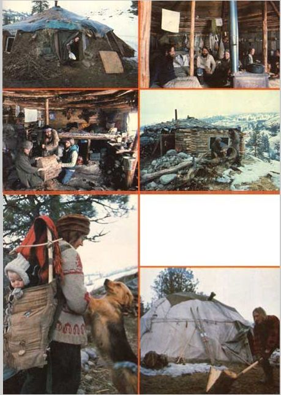

If you're ever caught facing a long, cold winter without adequate shelter . . . you have no money to buy or rent with .. . and very little construction skill : . . cheer up! You can still enjoy warm, snug quarters for pennies, or-perhaps-no cost at all! Just spend four days putting up a wickiup or earth lodge.
Two years ago the members of the Flowering Tree Farm commune ran smack-dab into Old Man Winter. Up to that point the group-which preferred a nomadic way of life-had been satisfied with their one-family tipis. After all, the simple dwellings were roomy, comfortable, and served as symbols for the "minimal ecological impact" philosophy that had prompted the Flowering Tree people to adopt a back-tobasics lifestyle in the first place.
But when the "tribe" moved to Washington State's Okanogan county and found it to their liking (there was plenty of work in the apple orchards, and good rich soil for the communal gardens), the tipis were-though no one knew it at the time-on the way out.
As summer stretched into fall the weather changed, began to get cold, and served notice that even lower temperatures were still to come as the season worked its way toward a typically (for the eastern WashingtonCanada border) fierce winter.
All of a sudden the old faithful tipis seemed less desirable . . . especially to Flowering Tree families with small children. The commune gritted its teeth and stuck that first winter out . . . with firewood windbreaks, thick straw floors, and inner linings in its tents to keep out the worst of the aching cold. These half measures helped, but everyone in the group agreed that they'd have to find warmer dwellings before the next cold season came blowin' in.
"As long as we had a fire, the tipis were warm," explains Heinz-a commune member"that is, they were warm on the side nearest the flames, and just freezing everywhere else!"
So, when autumn announced itself the following year, Heinz and the rest decided that they'd better "forage up" some winter shelter. Cost, of course, was a prime consideration ... the group is barter-oriented (its members often trade labor for necessary items or services), and seldom has a large supply of cash on hand.
A nearby abandoned cabin was restored to house a few of the commune's members, and the two converted school buses that had given the nomads mobility were adapted to serve as living quarters. The rest of the families, however, solved their shelter problems in a far more traditional manner . . . with earth lodges and wickiups.
The group found a good source of the only "store-bought" building materials in their lodges-wool, cotton batting, blankets, tarps, and the like-at auctions in the area. It seems that any items that weren't bid upon were generally discarded at the end of the sale and the auctioneers were glad to give the stuff to anyone who'd take it away.
Heinz, Song Feather, and their daughter Kachina live in the bigger of the two Flowering Tree lodges built from a little of this recycled material and a lot of earth and logs. Their structure is about 22 feet in diameter, can hold up to 30 people (if they don't mind being "friendly"), and cost the family a grand total of $4.00 to construct. The money was used to buy gasoline . . . for the drive to an area where fallen trees could be had for the hauling.
The couple-with the help of the rest of the commune-dug a three-foot-deep foundation pit and surrounded it with a framework of windfall timber posts. Scrap planks-which were gathered for free when a house in the nearby town was torn down-were set against this skeleton, and the earth from the hole was piled around and over the structure. Heinz then spread black plastic sheeting over the roof and secured its edges with more heaped soil. (This not only gives the "home" a leak-proof ceiling, it also functions as a primitive solar collector.) A blanket and a tarp (from one of the auctions) provided a double-layered-and somewhat insulated-door.
Later, Heinz and Song Feather equipped their "winter quarters" with salvaged windows and a thrown-away cast-iron stove. As a result, their "hogan" is warm inside. In fact, at times Heinz feels that it's too warm.
"We spent more time outside when we lived in the tipi, and I think that this fact alone makes the tent a healthier place to live," he says. "Also, an open fire has a kind of magic . . . it centers people. I'm thinking about throwing the stove out."
Song Feather agrees, and comments, "Tipis don't have as much impact on the soil . . . you can move them to allow the vegetation to reestablish itself."
"Yeah", Heinz adds, "instead of taking the wood to the house, you take the house to the wood."
But, though the couple both believe that portable tents are more convenient and ecologically sound abodes than their new lodge, they plan to wait until the weather breaks before they take up tipi residence again.
The wickiups that the group constructed are neither as big nor as warm as the earth houses. They're comfortable enough, though, and easy on the pocketbook, too.
Patty and Blackjack (who share one of these tents-with-a-sunken-living-room) dug a two-foot-deep foundation over which they set a pole framework. It took them four days to construct the shelter . . . three just to dig the pit. Their wickiup's roof and upper walls are a tipi canvas and their new house cost Patty and Blackjack only $30.00 . . . which is what the couple paid for a small used stove.
Dennis, another wickiup resident, feels that-though these "homes" aren't as well insulated as the earth lodges-their advantages in mobility and ease of construction outweigh the disadvantages in creature comforts.
Fact is, both forms of shelter have their advocates among the Flowering Tree Farm folks, as each of these primitive dwellings provides warm, low-cost, ecologically justified housing when the group needs it.
So, if you ever find yourself in dire need of warm, snug quarters that you can build in only three or four days for pennies . . . think of the Flowering Tree commune and its wickiups and earth lodges. The age-old designs still work!
|
 TOP, LEFT: Song Feather in the doorway of her snug, earth-banked lodge. ABOVE LEFT: some of the boys have gathered inside Buffalo and Moonstone's hogan to make a drum. Note how light and airy this ""primitive"" house is... and you can't beat the price! ABOVE, RIGHT: Here's what Buffalo's hogan looks like from the outside. Except for the black plastic, this earthen lodge could have been built two thousand years ago. LEFT: The Moonstone, her baby, and her dog. The Flowering Tree ""tribe"", obviously, follows many of the customs of the native peoples of this continent. BELOW: Blackjack splits wood outside his wickiip. Note that a wickiup isn't as well insulated as an earth-banked lodge... but that it is easier and quicker to build and far more portable than the more permanent hogan. |
|
|